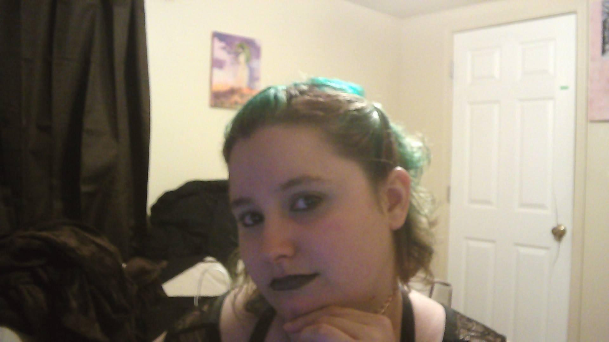
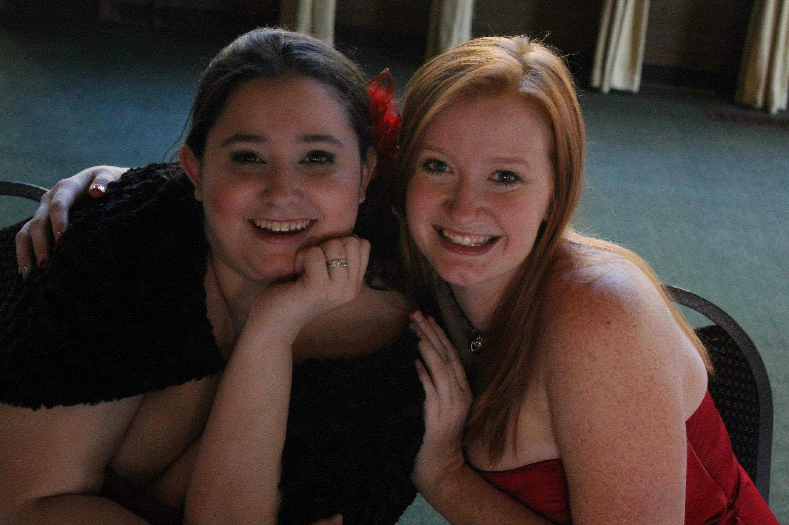
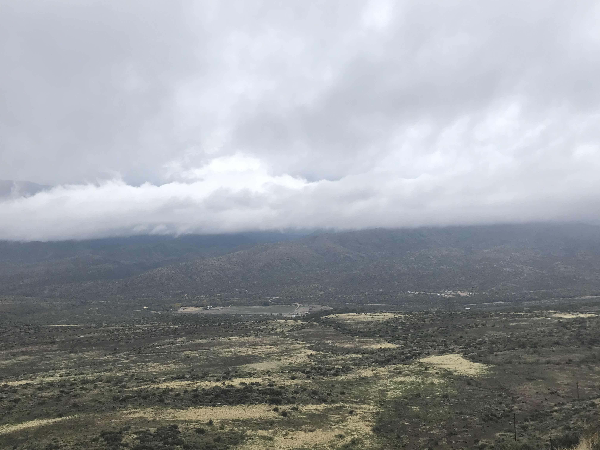
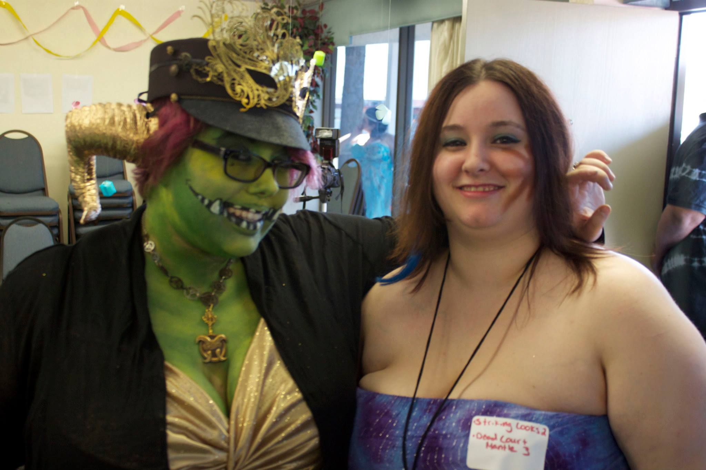
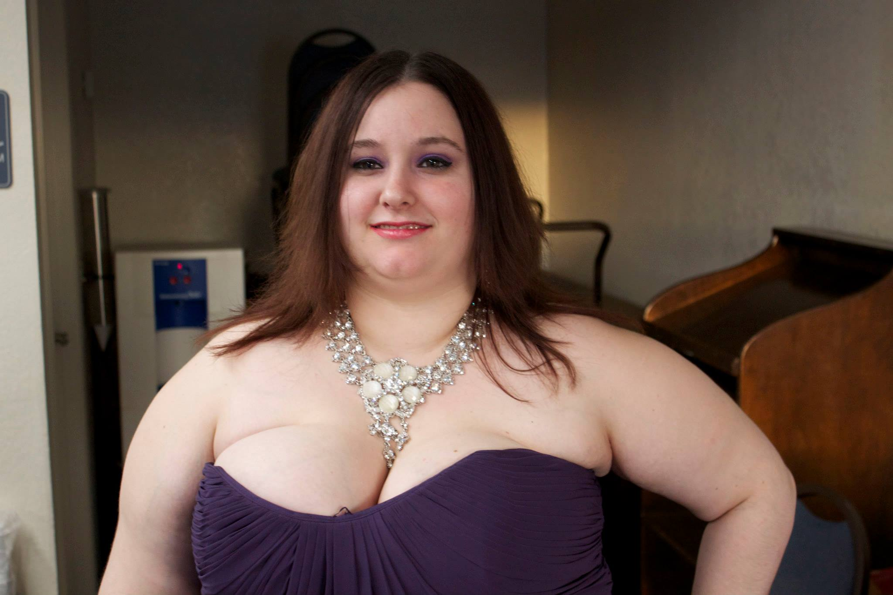
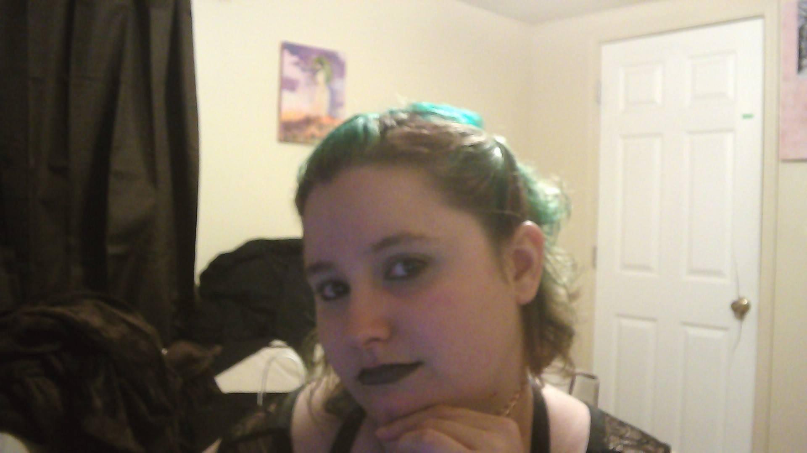
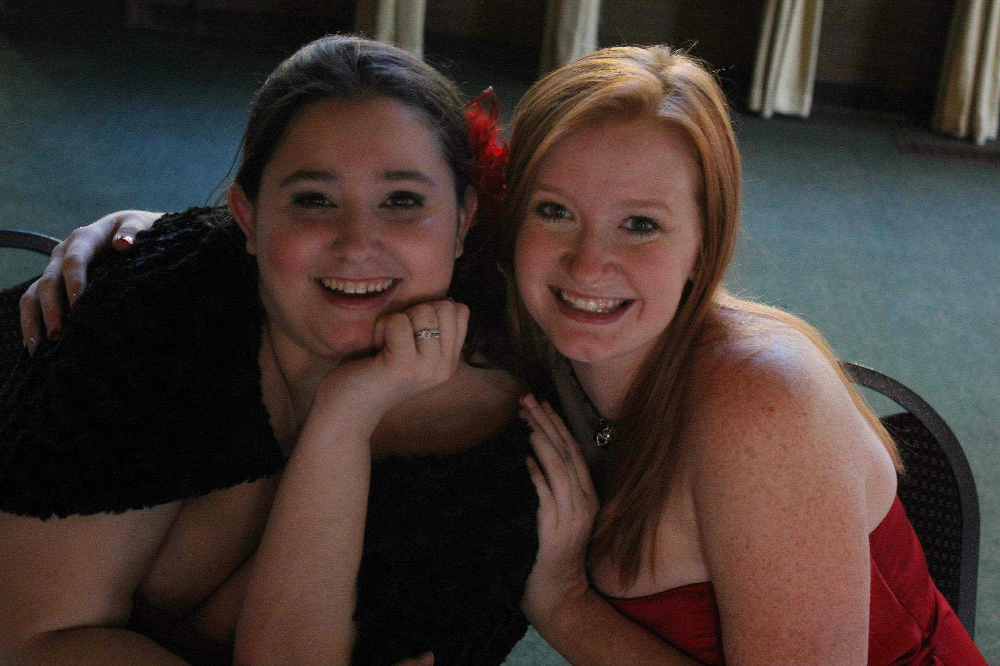
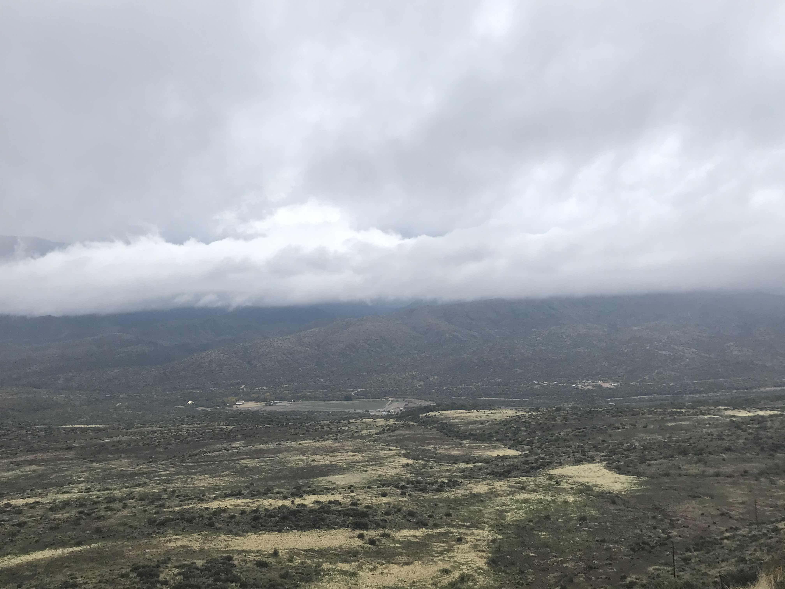
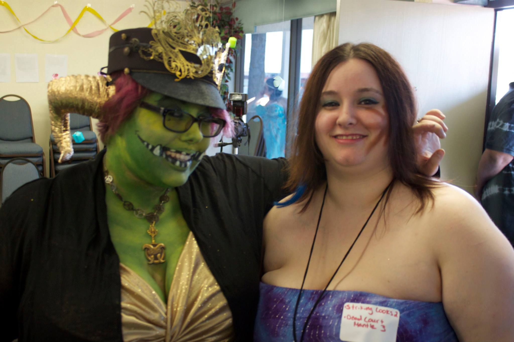
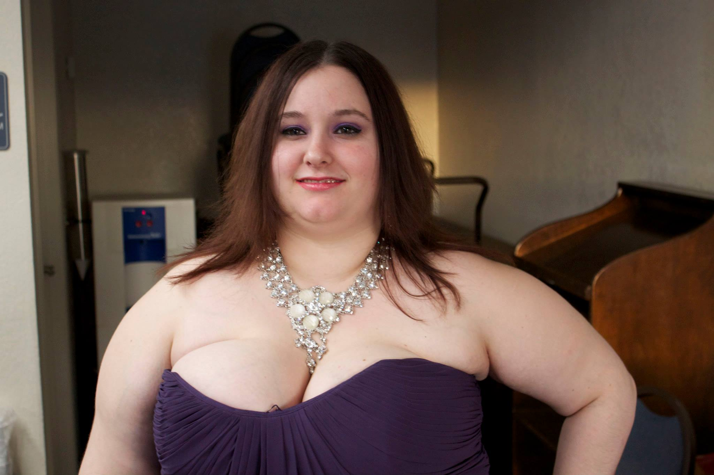

Welcome to Bewitched Adventures!
This site is meant to track various aspects of my, Spirit's, life such as interests, art, etc so that I can easily share it with my family and friends.
If you have stumbled on this website welcome! I hope you enjoy your visit! For those of you who are family and friends of mine, I hope that this site helps you get a better idea of who I am and what my intersts are.
~ Spirit
 









About Spirit
Hello!
My nick name is Spirit so that is what I'll be going by on this site. Let me tell you just a bit about myself.
I am 31 years old (2022) and I live in the Phoenix Metro area. I am interested in all kinds of things from video games and music to art and writing. I have an Associates Degree in Holistic Healthcare and a Bachelor's degree in Alternative Medicine. My intention is to persue my Master's degree and become a Physician's Asssistant.
I enjoy creative things like making bracelets from beads and rubberbands, crocheting, writing, Roleplaying, sometimes drawing, web designing, photomanipulation, photography, and I'm even learning to play the piano.
I am a normal person with normal struggles and I intend to talk about that some here on Bewitched Adventures. I'm hoping not to make it a pity party but rather a sharing of my own struggles so that others can relate and maybe take away some skills to help themselves... as I will also share what I'm doing to work on my mental health.
I love the cold. Not the freezing mind... but cold. I do love to look at snow and ice but I don't want to live with it and am happily planning to stay in the desert. I do not enjoy the heat so much which puts me at odds with the desert weather in the summer but since we get some monsoon season rain to cool us off... I guess I can survive!
I am not single! I have a loving boyfriend and his daughter in my life and I adore them both. I struggled to find the right puzzle pieces to make my life whole but I've finally found some amazing people to call mine and really know I am safe and loved. I was married before and that didn't go so well so I am happy to be taking things nice and slow and Let a more mature relationship develop between us.
And that is me! Spirit! If you have any questions for me please see my contact information below.
~ Spirit